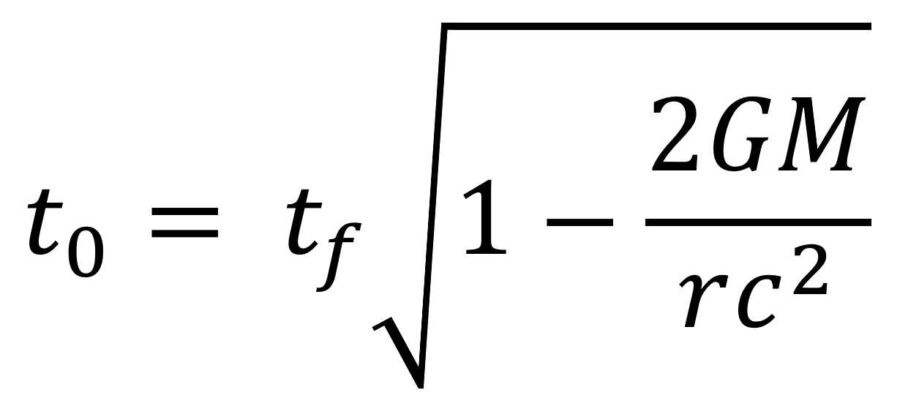
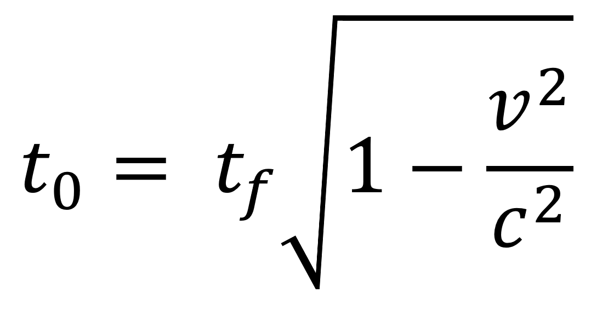
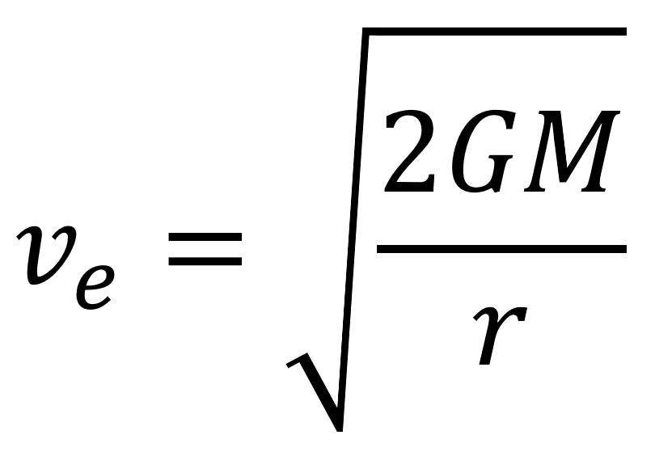
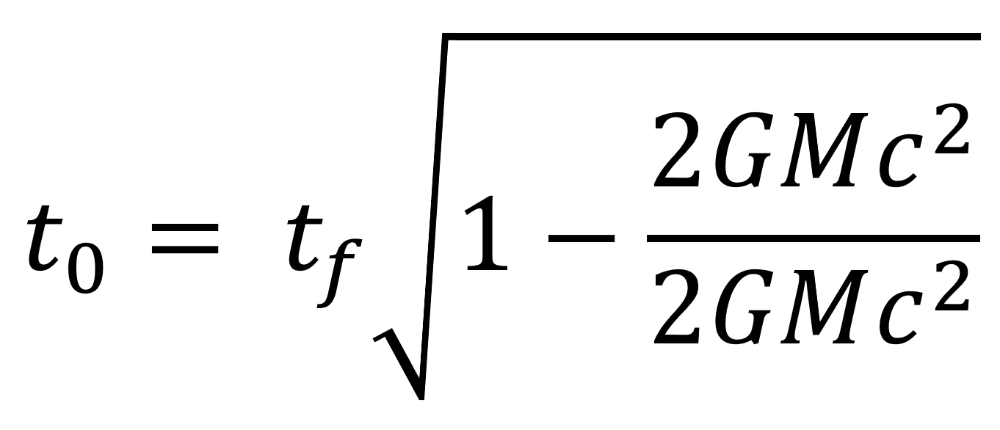

Gravitational time dilation occurs near any massive object. Time will pass slower for someone on the surface of earth than someone hovering a few kilometers above.
The equation for measuring gravitational time dilation is the following:

- t0 is the time from an object that's infinitely far away i.e. an object experiencing no time dilation
- tf is the time experienced by the object close to the body
- G is the gravitational constant
- M is the mass of the body
- r is the distance from the body
- c is the speed of light
If you know the regular equation for time dilation (), you will notice some similarities. This is because they are linked.

The formula for escape velocity for a body of mass M is on the right.
If you plug this expression for escape velocity in the place of v in
the equation for time dilation, you get the equation for
gravitational time dilation.
The event horizon is defined by where the escape velocity equals the speed of light, and something interest happens in this equation when you insert the variables.

The formula for the schwarzschild radius is Rs = 2GM / c2, which is the distance between the singularity and the event horizon. If this is substituted as the distance from the object (r) in our time dilation formula, we see that the whole second term inside the root is reduced to just 1. After subtracting and taking the root, we see that time dilation has become infinite. This is another way to define the event horizon: where time dilation becomes infinite.